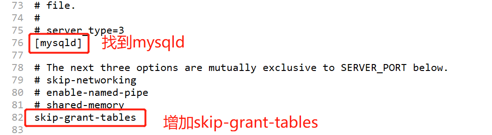

数据库管理
初次登录MySQL服务器时，能够看到里面有四个默认的数据库，其中mysql库主要负责存储数据库的用户、权限设置、关键字等mysql自己需要使用的控制和管理信息。

密码管理
MySQL5.7 忘记root用户密码的处理步骤
右键
我的电脑-->管理-->服务和应用程序-->服务-->MySQL57，关闭MySQL服务。打开
my.ini文件，通常在C:\ProgramData\MySQL\MySQL Server 5.7文件夹下，但是也可能在其他文件夹下，具体位置可以自行百度。编辑
my.ini文件，找到[mysqld]这一行，添加skip-grant-tables.添加这段代码以后，可以跳过密码验证，直接连接到mysql数据库。
执行
mysql -uroot命令，可以不输入密码，直接连接到mysql服务器。修改root用户密码（详见修改用户密码）。
删除
my.ini文件里的skip-grant-tables代码。右键
我的电脑-->管理-->服务和应用程序-->服务-->MySQL57，重新启动MySQL。使用
mysql -uroot -p 新密码登录MySQL服务器。
修改用户的密码
- 连接到mysql服务器，执行
show databases命令查看数据库。 - 执行
use mysql;命令，切换到 mysql 数据库。 show tables查看mysql数据库里所有的表格。在这些表格里有一个user表格，它用来存储了用户相关的数据（包括root用户）。desc user;查看user表的结构，发现这个表格里有很多的字段，其中有一些字段需要我们关注:- host:表示当前用户允许从哪台服务器登录。
- user:表示用户名，例如root用户。
- authentication_string:表示当前用户的密码，密码通过
mysql5的方式进行了加密。
- 执行
select host,user,authentication_string from user where user="root";命令，查看root用户的相关信息。可以看到root用户加密以后的密码。 - 执行
update user set authentication_string=password("你的密码") where user="root";命令，修改root用户的密码。
- 连接到mysql服务器，执行
用户管理
MySQL数据库默认有一个root用户，这个用户拥有着至高无上的权限。为了保证数据的安全，我们不会轻易的使用root用户，而是创建一些新的用户，并赋予有限的权限，从而保证数据库的安全。
MySQL数据库中的用户都保存在mysql库的user表中，添加用户其实就是往mysql.user表添加一条记录。但是我们不直接修改mysql.user表，而是通过特定的命令来添加用户。
添加用户
create user `username`@`允许登录的地址` identified by "密码"; create user chris@localhost identified by "abcd1234"; -- 创建了用户chris,密码是abcd1234,它只能本机登录删除用户
drop user `username`@`允许登录的主机名`; -- 使用 drop 命令删除用户 drop user chris@localhost;
权限管理
MySQL中的权限验证分为两个阶段:
- 第一阶段为连接验证，主要限制用户连接 MySQL服务器时使用密码是否正确，IP地址是否允许。
- 第二阶段为操作检查，主要检查用户执行的指令是否被允许，一般非管理员账户不被允许执行 drop、delete 等危险操作
使用命令创建用户以后，这个用户默认是没有任何权限的，也就是说，用户不能做任何的操作。我们在给用户赋予权限的时候，要遵守一定的原则，不能直接把所有的权限都给到用户。
权限赋予的原则
- 只授予能满足需要的最小权限，防止用户执行危险操作。
- 限制用户的登录主机，防止不速之客登录数据库。
- 禁止或删除没有密码的用户。
- 禁止用户使用弱密码。
- 定期清理无效的用户，回收权限或者删除用户。
查看系统所有权限
show privileges;
上述命令会列出MySQL里支持的所有31种权限。
权限赋予
/*
权限列表，可以选择 SELECT,UPDATE,DELETE等，也可以使用 ALL PRIVILEGES 赋予所有的权限。
数据库名，表示权限赋予给了这个用户能够那个数据库。如果是所有数据库，可以使用 *
表名，表示权限赋予给了这个用户能够访问哪个表。如果是所有的表，可以使用 *
WITH GRANT OPTION, 表示权限是否还能向下下发。
*/
GRANT 权限列表 on 数据库名.表名 to '用户名'@'主机' [WITH GRANT OPTION];
-- 刷新使权限生效
flush privileges;
GRANT SELECT ON *.* to chris@localhost; -- chirs 用户能够查询所有数据库的所有表格，但是这个权限不能再下发
GRANT ALL PRIVILEGES *.* to chris@localhost WITH GRANT OPTION; -- chirs 用户对所有数据所有表格都有权限，而且这个权限可以下发!
查看用户权限
show grants; -- 查看当前用户的权限
show grants for 用户名@主机; -- 查看指定用户的权限
回收权限
revoke 权限列表 ON 数据库名.表名 FROM '用户名'@'主机IP地址';
登录管理
MySQL的root用户默认只允许本机登录，不能通过其他计算机连接到本机的MySQL服务器。
mysql -h192.168.2.134 -uroot -p # 连接到 192.68.2.134，一个远程的MySQL服务器，会连接失败
如果想要让自己电脑上安装的MySQL服务器被网络上的其他电脑访问，需要对账户允许登录的服务器进行修改。
update user set host="%" where user="root"; -- 允许 root 用户从任意的主机登录
请注意，上述的操作非常危险！root用户可以通过网络上任意一台电脑登录，由于root用户拥有至高无上的权限，这样会导致数据库非常的不安全！